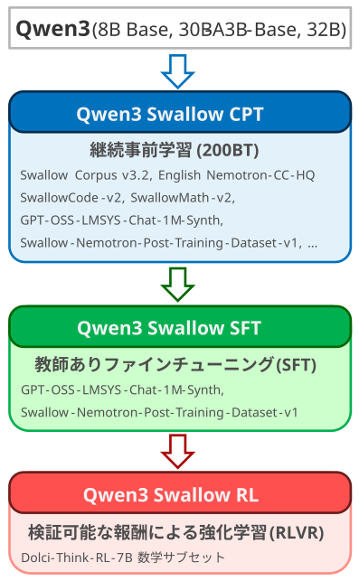

2026年2月20日
Qwen3 Swallow
Qwen3 SwallowはAlibaba Qwen3の日本語能力と思考力を強化した推論型大規模言語モデル (8B, 30B-A3B, 32B) です。モデルのパラメータ（重み）はApache 2.0ライセンスで公開されていますので、商用・研究・個人的用途で無料かつ自由にダウンロード、カスタマイズ、ホスティングできます。Qwen3 SwallowはAlibaba社Qwen3をベースに、東京科学大学情報理工学院の岡崎研究室と横田研究室、国立研究開発法人産業技術総合研究所の研究チームで開発されました。

特徴
高性能な推論型LLM
8Bと32Bのモデルは同規模以下のオープンなLLMの中で日本語タスクで最高性能を達成しました（2026年2月時点）。
オープンなLLM
モデルの重みが公開されていますので、情報漏洩の心配がないオンプレミス環境での実行や、タスク・ドメインに特化したチューニングが可能です。
推論型モデルに特化したレシピ
推論力の強化に向けて、継続事前学習、教師ありファインチューニング（SFT）、強化学習の全段階のレシピを刷新しました
寛容なライセンス
商用・研究用途を問わず自由に利用できる Apache 2.0 ライセンスを採用するため、訓練データの厳選や再合成を行いました。
推論型LLMの最新版
公開モデル
推論モードをonにしてお使いください
更新履歴
- 2026-02-20: 初期バージョン（v0.2）を公開（v0.1は欠番となります）。
性能
8Bモデル
Qwen3 Swallow 8B RLの性能を以下のLLMと比較しました。評価には大規模言語モデル評価フレームワークであるswallow-evaluation-instructを用いました。なお、この評価結果はSwallow LLM Leaderboard v2でもご覧いただけます（その他のLLMを比較に追加できます）。
- Llama 3.1 Swallow 8B Instruct（Swallowチームが構築した最新の非推論型モデル）
- DeepSeek-R1-Distill-Llama-8B（DeepSeek R1をLlama 3.1 8Bに蒸留した推論型モデル）
- Olmo 3 7B Think（同程度の規模のオープンな推論型モデル）
- Qwen3 8B（深い推論のレベルは有効）
なお、Qwen3 Swallow 8B RLの継続事前学習元のモデルはQwen3 8B Base、つまり事後学習が施されていない事前学習済みモデルであることに注意が必要です。つまり、Swallowプロジェクトでの継続事前学習や事後学習で深い推論を発現させる必要があり、そのレシピの探求が今回のモデル開発の目的の一つです。
また、両者は同じQwen3 8B Baseを出発しており、Alibaba社が公式に事後学習を行ったモデルがQwen 3 8B、Swallowチームで継続事前学習とSFT・RLを施したモデルがQwen3 Swallow 8B RLとなります。したがって、両者の性能の差から継続事前学習と事後学習のレシピの良し悪しを推し量ることができます。
Qwen3 Swallow 8B RLの日本語タスクの平均スコアは0.557で、総パラメータ数が8B以下のオープンなLLMの中で最高性能を達成しました。MMLU-ProX-JaとMATH-100以外のタスクにおいて、Qwen3 8BよりもQwen3 Swallow 8B RLの方が高いスコアを出しました（MATH-100のスコアは同じ）。特に、日本に関する知識量を測定するJamC-QAでは+4.6ポイントの性能向上、推論型モデル向けのベンチマークである日本語GPQAでも+3.8ポイント高いスコアが得られ、深い推論が発現したことが確認できました。なお、グラフでは示していませんが、日本語MT-Benchの平均スコアは0.844で、この規模のLLMとしては非常に高い対話能力を有しています。
Qwen3 Swallow 8Bの英語タスクの平均スコアは0.694で、こちらはQwen3-8Bに及びませんでした。Swallowのモデル開発では英語よりも日本語を優先していますが、継続事前学習のレシピにさらなる改善の余地があるのかもしれません。それでも、同じ規模の推論型モデルであるDeepSeek-R1-Distill-Llama-8BやOlmo 3 7B Thinkを上回る性能を達成できました。
30B-A3B, 32Bモデル
Qwen3 Swallow 30B-A3B RLとQwen3 Swallow 32B RLは専門家の混合（MoE）か密モデル（dense model）かの違いはありますが、総パラメータ数は同じくらいですので、まとめて比較を行います。前者の継続事前学習元はQwen3-30B-A3B-Base、後者はQwen3-32Bとなります。つまり、前者は事前学習済みモデルからの継続事前学習、後者は事後学習済みモデルからの継続事前学習となります（Qwen3 32Bの事前学習済みモデルは公開されていないため）。
Qwen3 Swallow 30B-A3B および 32Bの日本語タスクの平均スコアはそれぞれ、0.591と0.609でした。特に、Qwen3 Swallow 32Bは総パラメータ数が32B以下のオープンなLLMの中で最高性能を達成しました。また、Qwen3 Swallow 32Bは日英翻訳以外のタスクにおいて、継続事前学習元であるQwen3 32Bを上回りました（日英翻訳のスコアの差は0.1ポイントで、誤差の範囲内と言えます）。
Qwen3 Swallow 30B-A3B および 32Bに関して、ベースラインモデルよりもスコアが顕著に高かったタスクはJamC-QA (+3.6ポイントと+3.9ポイント)、英日翻訳（+7.3ポイントと+2.6ポイント）、GPQA（+3.8ポイントと+3.6ポイント）でした。この結果から、継続事前学習で日本や日本語に関する知識を取り込み、SFTやRLで思考力を鍛えるという目標が達成されたと考えています。なお、グラフでは示していませんが、日本語MT-Benchの平均スコアは0.889と0.894で、このベンチマークから測定できる対話能力としては上限に近づいています。
Qwen3 Swallow 30B-A3B および 32Bの日本語タスクの平均スコアはそれぞれ、0.732と0.792でした。特に、Qwen3 Swallow 32Bは総パラメータ数が32B以下のオープンなLLMの中で最高性能を達成しました。Qwen3 Swallow 32Bは多くのタスクでベースラインを上回ったのに対し、Qwen3 Swallow 30B-A3Bはベースラインを下回るタスクが多く、平均スコアもベースラインを下回りました。
次に、同規模の推論型モデルと比較します。
- Olmo 3 32B Think（同程度の規模のオープンな推論型モデル）
- QwQ Bakeneko 32B（Qwen2.5 32Bを18Bトークン継続事前学習した後にQwQのチャットベクトルを適用した推論型モデル）
- ABEJA-QwQ32b-Reasoning-Japanese-v1.0（Qwen2.5 32B Instructを100Bトークン継続事前学習した後にQwQのチャットベクトルを適用した推論型モデル）
- ELYZA-Thinking-1.0-Qwen-32B（Qwen2.5 32B Instructを継続事前学習した後にSFTで深い推論を発現させたモデル）
比較したモデルの中では、Qwen3 Swallow 32Bは苦手なタスクがなく、最も高い平均スコアを記録しました。Olmo 3 32 Thinkは開発者自身が日本語を対象にしたモデルではないと説明していますので、JamC-QAや英日翻訳のスコアは低めでした（むしろ、日本語を対象にしていないのに高いと思います）。日本語の数学やコーディングのベンチマークで比較的高いスコアを出していることから、英語での基礎能力の高さが日本語にも転移していると考えられます。QwQ BakenekoとABEJA-QwQ32b-Reasoning-Japanese-v1.0は継続事前学習で日本語の能力を強化した後に、SFTやRLではなくチャットベクトル（モデルマージ）で対話能力や深い推論を発現させています。苦手なタスクは見当たらず、特にQwQ BakenekoはJamC-QAで良好な性能を示しています。このことから、チャットベクトルの高い効果が伺えますが、同系列のモデルに対してのみ適用できる手法ですので、推論型モデルのレシピとしては利用局面が限られます。ELYZA-Thinking-1.0-Qwen-32BはSFTで深い推論を発現させたモデルで、MMLU-ProXやGPQA、MATH-100の結果から深い推論が発現していることが確認できます。ただ、JHumanEvalのスコアが低く、これは開発元の技術ブログの結果と食い違っています。Swallowチームで原因を調査したところ、「コードブロックの終わりの三重引用符に続いてスペース・改行なしに文字列が出力されている」「</think>が複数回出力される」などのフォーマット違反があり、swallow-evaluation-instructの評価基準では救済されなかったようで、コーディング力が過小評価されている可能性があります。
英語タスクの評価でも、日本語と同様の傾向が見られました。以上のことから、Qwen3 Swallowシリーズは日本語と英語の両方に対応した高性能な推論型モデルと言えます。
構築方法

Qwen3 SwallowはAlibaba Qwen3 8B, 30B-A3B, 32Bを起点に、継続事前学習 (Continual Pre-Training; CPT)、教師ありファインチューニング (Supervised Fine-Tuning; SFT)、強化学習 (Reinforcement Learning; RL) の３段階で構築されています。すべての段階を経たQwen3 Swallow RLを完全版として公開していますが、強化学習適用前のQwen3 Swallow SFT、および教師ありファインチューニング適用前のQwen3 Swallow CPTも試験版として公開しています。
大規模な計算資源を要する大規模言語モデルの開発では、学習の効率化がレシピ探求の高速化、ひいては性能やコストに影響する鍵となります。本モデルでは、これまでに蓄積した低精度学習や分散並列学習といった知見（Fujii+ 2024a, 2024b）を活用し、計算資源をより効率的に使えるよう最適化しました。具体的には、継続事前学習において、従来のPer-Tensor Scaling (Micikevicius+, 2022) ではなく、Per-Block Scalingを採用し、Hopper世代のGPUにおいてLinear層の計算をFP8 (E4M3) GEMMで実行することにより、20%の高速化を実現しました。Qwen3-Swallowを開発するために利用したライブラリ、高速化手法、ハイパーパラメータについては、ブログ記事を参照ください。
なお、公開したバージョンであるv0.2の前に、v0.1のモデルを開発しました。このモデルは日本語で問いかけたときに深い推論が出現しなかったり、深い推論が出現したときに思考が閉じない（</think>タグが生成されない）などの問題が生じたため、リリースを見送りました。
継続事前学習 (CPT)
継続事前学習 (Fujii+, 2024) では、日本に関する知識 (Saito+, 2025) や日本語での対話力 (Ma+, 2025) を高めながら、英語力や数学・科学・プログラミングといった高度な推論能力を維持もしくは改善することを目指しました。継続事前学習のコーパスのサイズは200Bトークンとし、日本語・英語・数学・コーディングのデータをバランスよく配合しています。
学習データの半分近くを占めるのは、日本語の大規模ウェブテキストコーパスであるSwallowコーパス (Okazaki+, 2024) の最新版 (v3.2) です。このコーパスは2025年3月までにクローリングされたCommon Crawlのスナップショットから、日本語のウェブページを抽出し、重複除去と品質フィルタリングを適用することで構築されています。品質フィルタリングのために、GPT-OSS Safeguard 120B を模倣したn-gramベースの分類器を新たに開発しました。
日本語データとしては、他にSwallowコーパスから質問応答を合成したデータ (服部+, 2025) と日本語のWikipediaを用いました。英語のデータとしては、Nemotron-CC high quality actual (Su+, 2025)、Cosmopedia、英語のWikipediaを採用し、翻訳能力を改善する対訳データとしてLaboro ParaCorpusとkaken-trans-ja-enを用いました。数学とコーディングのデータとして、Swallowプロジェクトで新たに開発されたSwallowMath-v2とSwallowCode-v2 (Fujii+, 2026) を用いました。
また、元のモデルの対話能力と推論能力を維持しつつ、SFTとRLの効果を高めるために、推論過程を含む事後学習データを事前学習に組み込みました。指示チューニングの学習データとしてLMSYS-Chat-1Mをもとに推論過程と応答をGPT-OSSを用いて日本語および英語の二言語で合成したGPT-OSS-LMSYS-Chat-1M-Synth (Dung+, 2026)、数学・科学・コード生成ドメインにおける指示応答・推論の学習データとしてNemotron-Post-Training-Dataset-v1にGPT-OSSで推論過程と応答を合成したSwallow-Nemotron-Post-Training-Dataset-v1を用いました。
教師ありファインチューニング (SFT)
事後学習用のデータを継続事前学習でも用いているため、CPTモデルでも対話や深い推論は可能ですが、さらに汎用対話能力などを改善するために教師ありファインチューニング (SFT) を実施しました。試行錯誤の末に、継続事前学習でも用いたGPT-OSS-LMSYS-Chat-1M-SynthとSwallow-Nemotron-Post-Training-Dataset-v1を採用しました。
強化学習 (RL)
深い推論が必要なタスク、例えば科学質問応答 (GPQA) や数学 (AIME)、コード生成 (LiveCodeBench) の性能を高めるため、強化学習を適用しました。学習アルゴリズムとして、Group Relative Policy Optimization (GRPO) に Clip-Higher および Dynamic Sampling (Yu+ 2025)、Truncated Importance Sampling (TIS) (Yao+ 2025)、KL損失の削除、推論時と学習時のポリシーおよびMoE専門家を一致させる Rollout Routing Replay (Zheng+ 2025) を適用したものを採用しています。学習データにはDolci-Think-RL-7Bの中で、ライセンスの問題がないことを自前で確認した数学サブセットを用い、報酬には最終解答の正誤を採用しました。いわゆる、検証可能な報酬を用いた強化学習 (Reinforcement Learning with Verifiable Rewards; RLVR) です。
量子化
推論時の計算コストとメモリ使用量を削減しつつ、強化学習で獲得した推論性能の劣化を可能な限り抑えることを目的として、RLモデルに対して 4-bit 量子化を適用しました。量子化手法としては、GPTQ (Frantar+, 2022) と AWQ (Lin+, 2023) を採用し、実装には GPT-QModel を用いています。
量子化の校正データには、強化学習データセットのプロンプトから生成した 1,024 サンプルを用いました。生成結果に対してルールベースの検証を行い、<think> タグが閉じていないサンプル、および回答が不正解のサンプルを除外しています。こうして得られた有効サンプルのみを量子化の校正に使用しました。モデルごとに有効サンプル数は異なりますが、全体としてはおよそ 8 割のサンプルが校正データとして採用されています。
モデル構築の各段階における性能の変化
事前学習済みモデルである Qwen3 8B Base を出発点として構築した Qwen3-Swallow-8B を例にとって、継続事前学習（CPT）、教師ありファインチューニング (SFT)、強化学習 (RL) モデルの性能を比較することにより、各段階で獲得した知識や能力を考察します。
出発点である Qwen3 8B Base（左端）と比べて、CPTモデル（左から2番目）は、深い推論が求められる数学 (AIME)やコード生成 (LiveCodeBench) を含むほぼすべてのタスクで性能が改善しており、推論過程を含む事後学習データを用いたことにより、継続事前学習の段階で深い推論能力が発現したことが伺えます（実際にCPTモデルは推論過程つき応答を返すことを確認しています）。またJamC-QAおよび翻訳は、CPTモデルと比べてSFTモデル（左から3番目）およびRLモデル（左から4番目）の性能が横ばいであることから、日本に関する知識や翻訳能力は、もっぱら継続事前学習によって獲得されたこと (Saito+, 2025) がわかります。
次に、CPTモデルと比べて、SFTモデル（左から3番目）は、大学レベルの試験問題であるMMLU-ProX-JaやMMLU-Pro、科学質問応答であるGPQA、数学のMATH-100やMATH-500が主に改善しています。したがって、汎化的な能力向上というよりも、SFT学習データのGPT-OSS-Nemotron-Post-Training-Dataset-v1-Jaと一致するSTEMドメイン内タスクにおける性能改善が主であった (Huan+, 2025) 可能性があります。
最後に、SFTモデルと比べて、RLモデル（左から4番目）は、日本語GPQA、AIME、およびLiveCodeBenchで主に性能が改善しています。したがって、強化学習によって、高難易度の課題を解けるレベルまで深い推論能力が強化されたことがうかがえます。また、専ら数学の設問で強化学習を行ったにもかかわらず、科学質問応答（GPQA）やコード生成（LiveCodeBench）の性能が改善したことから、強化学習で改善した深い推論能力は、ドメイン外タスクにも寄与する汎化が生じた (Cheng+, 2025) ことが示唆されます。また強化学習の効果により、Alibaba社による事後学習モデルであるQwen 3 8B（右端）をLiveCodeBench等で上回る水準に達しました。
発表文献
- Kazuki Fujii, Taishi Nakamura, Mengsay Loem, Hiroki Iida, Masanari Ohi, Kakeru Hattori, Hirai Shota, Sakae Mizuki, Rio Yokota, and Naoaki Okazaki. 2024. Continual Pre-Training for Cross-Lingual LLM Adaptation: Enhancing Japanese Language Capabilities. In Proceedings of the First Conference on Language Modeling (COLM), October 2024.
- Kazuki Fujii, Kohei Watanabe, and Rio Yokota. 2024. Accelerating Large Language Model Training with 4D Parallelism and Memory Consumption Estimator. arXiv:2411.06465.
- Kazuki Fujii, Taishi Nakamura, and Rio Yokota. 2024. Balancing Speed and Stability: The Trade-offs of FP8 vs. BF16 Training in LLMs. arXiv:2411.08719.
- Kazuki Fujii, Yukito Tajima, Sakae Mizuki, Masaki Kawamura, Hinari Shimada, Taihei Shiotani, Koshiro Saito, Masanari Oi, Taishi Nakamura, Takumi Okamoto, Shigeki Ishida, Kakeru Hattori, Youmi Ma, Hiroya Takamura, Rio Yokota, Jun Sakuma, and Naoaki Okazaki. 2026. Rewriting Pre-Training Data Boosts LLM Performance in Math and Code. In The Fourteenth International Conference on Learning Representations (ICLR), April 2026.
- Youmi Ma, Sakae Mizuki, Kazuki Fujii, Taishi Nakamura, Masanari Ohi, Hinari Shimada, Taihei Shiotani, Koshiro Saito, Koki Maeda, Kakeru Hattori, Takumi Okamoto, Shigeki Ishida, Rio Yokota, Hiroya Takamura, and Naoaki Okazaki. 2025. Building Instruction-Tuning Datasets from Human-Written Instructions with Open-Weight Large Language Models. In Proceedings of the Second Conference on Language Modeling (COLM), October 2025.
- Naoaki Okazaki, Kakeru Hattori, Hirai Shota, Hiroki Iida, Masanari Ohi, Kazuki Fujii, Taishi Nakamura, Mengsay Loem, Rio Yokota, and Sakae Mizuki. 2024. Building a Large Japanese Web Corpus for Large Language Models. In Proceedings of the First Conference on Language Modeling (COLM), October 2024.
- Nguyen Tien Dung, 水木 栄, Youmi Ma, 片山 結太, 岡崎 直観. 2026. 推論型大規模言語モデルの蒸留による対話応答能力の改善. 2026年度 人工知能学会全国大会（第40回）（投稿中）, 2026年6月.
- 服部 翔, 水木 栄, 藤井 一喜, 中村 泰士, 塩谷 泰平, 植田 快, 新妻 巧朗, 川畑 輝, 田森 秀明, Youmi Ma, 前田 航希, 大井 聖也, 齋藤 幸史郎, 岡本 拓己, 石田 茂樹, 横田 理央, 高村 大也, 岡崎 直観. 2025. 新聞記事からつくる 時事と社会に強い日本語LLM. 言語処理学会第31回年次大会 (NLP2025), 2025年3月.
- Koshiro Saito, Sakae Mizuki, Masanari Ohi, Taishi Nakamura, Taihei Shiotani, Koki Maeda, Youmi Ma, Kakeru Hattori, Kazuki Fujii, Takumi Okamoto, Shigeki Ishida, Hiroya Takamura, Rio Yokota, and Naoaki Okazaki. 2025. Why We Build Local Large Language Models: An Observational Analysis from 35 Japanese and Multilingual LLMs. In The 1st Workshop on Multilingual and Equitable Language Technologies (MELT), October 2025.
参考文献
- Zhoujun Cheng, Shibo Hao, Tianyang Liu, Fan Zhou, Yutao Xie, Feng Yao, Yuexin Bian, Nilabjo Dey, Yonghao Zhuang, Yuheng Zha, Yi Gu, Kun Zhou, Yuqi Wang, Yuan Li, Richard Fan, Jianshu She, Chengqian Gao, Abulhair Saparov, Taylor W. Killian, Haonan Li, Mikhail Yurochkin, Eric P. Xing, Zhengzhong Liu, Zhiting Hu. 2025. Revisiting Reinforcement Learning for LLM Reasoning from A Cross-Domain Perspective. In The Thirty-ninth Annual Conference on Neural Information Processing Systems Datasets and Benchmarks Track. December 2025.
- Elias Frantar, Saleh Ashkboos, Torsten Hoefler, and Dan Alistarh. 2022. GPTQ: Accurate Post-training Quantization for Generative Pre-trained Transformers. arXiv:2210.17323.
- Maggie Huan, Yuetai Li, Tuney Zheng, Xiaoyu Xu, Seungone Kim, Minxin Du, Radha Poovendran, Graham Neubig, Xiang Yue. 2025. Does math reasoning improve general llm capabilities? understanding transferability of llm reasoning. arXiv:2507.00432.
- Ji Lin, Jiaming Tang, Haotian Tang, Shang Yang, Wei-Ming Chen, Wei-Chen Wang, Guangxuan Xiao, Xingyu Dang, Chuang Gan, and Song Han. 2024. AWQ: Activation-aware Weight Quantization for LLM Compression and Acceleration. Proceedings of Machine Learning and Systems, 6:87-100.
- Paulius Micikevicius, Dusan Stosic, Neil Burgess, Marius Cornea, Pradeep Dubey, Richard Grisenthwaite, Sangwon Ha, Alexander Heinecke, Patrick Judd, John Kamalu, Naveen Mellempudi, Stuart Oberman, Mohammad Shoeybi, Michael Siu, and Hao Wu. 2022. FP8 Formats for Deep Learning. arXiv:2209.05433.
- Feng Yao, Liyuan Liu, Dinghuai Zhang, Chengyu Dong, Jingbo Shang, Jianfeng Gao. 2025. Your Efficient RL Framework Secretly Brings You Off-Policy RL Training. Feng Yao’s Notion. August 2025.
- Qiying Yu, Zheng Zhang, Ruofei Zhu, Yufeng Yuan, Xiaochen Zuo, YuYue, Weinan Dai, Tiantian Fan, Gaohong Liu, Juncai Liu, LingJun Liu, Xin Liu, Haibin Lin, Zhiqi Lin, Bole Ma, Guangming Sheng, Yuxuan Tong, Chi Zhang, Mofan Zhang, Ru Zhang, Wang Zhang, Hang Zhu, Jinhua Zhu, Jiaze Chen, Jiangjie Chen, Chengyi Wang, Hongli Yu, Yuxuan Song, Xiangpeng Wei, Hao Zhou, Jingjing Liu, Wei-Ying Ma, Ya-Qin Zhang, Lin Yan, Yonghui Wu, Mingxuan Wang. 2025. DAPO: An Open-Source LLM Reinforcement Learning System at Scale. In Thirty-Ninth Annual Conference on Neural Information Processing Systems (NeurIPS). December 2025.
- Chujie Zheng, Shixuan Liu, Mingze Li, Xiong-Hui Chen, Bowen Yu, Chang Gao, Kai Dang, Yuqiong Liu, Rui Men, An Yang, Jingren Zhou, Junyang Lin. Group Sequence Policy Optimization. arXiv:2507.18071, July 2025.
付記
大規模言語モデルSwallowの研究開発は、産総研政策予算プロジェクト「フィジカル領域の生成AI基盤モデルに関する研究開発」、国立研究開発法人新エネルギー・産業技術総合開発機構（NEDO）の「AIの安全性確保に関する研究開発・検証等の推進事業」プロジェクト（JPNP25006）、 文部科学省の補助事業「生成AIモデルの透明性・信頼性の確保に向けた研究開発拠点形成」、JSPS科研費 25H01137、その他の支援によって実施されました。また、産総研及びAIST Solutionsが提供するABCI 3.0を「ABCI 3.0開発加速利用」の支援を受けて利用しました。さらに、東京科学大学のスーパーコンピュータTSUBAME4.0を利用しました。